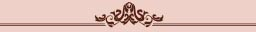
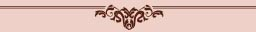
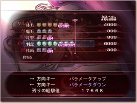

|

レベルアップとパラメータについて

|

|
酒場にある自分の部屋で休むことで、主人公カンパニュラをレベルアップをさせることができます。
レベルアップでは自分の好きなパラメータを上げることができますが、それには敵を倒して得た経験値が必要です。 各パラメータの役割は、以下の通りです。
|
|
体力 |
主人公の体力です。敵の攻撃に当たると減っていき、ゼロになるとゲームオーバーになってしまいます。一晩寝ると回復します。 |
|
魔力 |
主人公の魔力です。魔法や魔法剣を使うと少しずつ減っていき、無くなると、魔法・魔法剣が使えなくなります。 |
|
攻撃 |
剣による直接攻撃の攻撃力です。 魔法や魔法剣の威力には関係しません。 |
|
判定 |
主人公の当たり判定の小ささです。 このパラメータを上げると、敵の攻撃に当たりにくくなります。 |
|
技術 |
技術のパラメータをアップさせると、主人公が特殊能力（スキル）を覚えていきます。 |
戻る
|